概要
LINE Botを作りつつ、Messaging API(および周辺の技術)の基本的な使い方を学んでいただければと思います！
当日の持ち物
- LINEがインストール済みのスマホ
- ChromeがインストールされたPC（Chromeのバージョンは最新のものを使っていただければと！）
事前準備
- Azureアカウント作成
- LINEアカウント作成(こちらのサイトでログインできるかどうかを確認ください)
- Bot Framework Comporserインストール
- .NET Core SDK ( 現時点の安定板、推奨版を使用 )
- Node.js ( 現時点の安定板、推奨版を使用 )
使用するサービス・ツール
- Bot Framework Comporser
- Microsoft Azure Bot Service(Bot Framework Composer)
- 他、Bot Service利用に関連するMicrosoft Azureのサービス
- LINE
構成図
注意事項
若干、Microsoft Azureの課金が発生する可能性があります。
チャネルの作成スタート
https://developers.line.me/ja/services/messaging-api/ にアクセス。
「今すぐはじめよう」のボタンを押して進めていきましょう。

「LINEアカウントでログイン」を押してください。

LINEのログインを求められるのでログインしてください。

チャネルの種類
Messaging APIになっているか確認します。

プロバイダ
既にプロバイダーを作っている場合 → 利用するプロバイダーを選択しましょう。
初めて → 新規プロバイダー作成を選択しプロバイダー名を入力しましょう。
（LINEという文字は含められません。）

会社・事業者の所在国・地域

チャネルアイコン
チャネルアイコンを登録しましょう。（今回は必須ではありません）
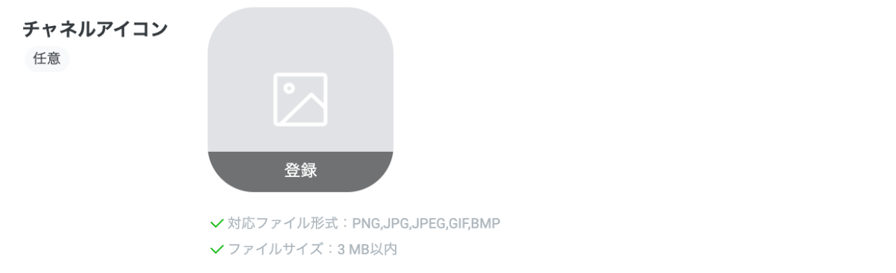
チャネル名、チャネル説明
下記を入力しましょう。
チャネル名
BotComposerチャネル説明
BotComposerです。大業種、小業種

メールアドレス、プライバシーポリシーURL、サービス利用規約URL
メールアドレスを確認しましょう。
プライバシーポリシーURLとサービス利用規約URLは入力しないで大丈夫です。

作成ボタン
下記２点の利用規約にチェックをして「作成」ボタンを押しましょう。
「OK」を押しましょう。
「同意する」を押しましょう。
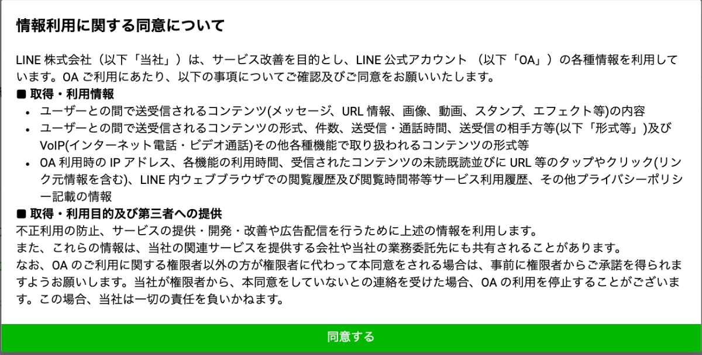
LINE公式アカウント(LINE Bot)と友だちになる
QRコードで友だち追加
「Messaging API設定」タブに移動し、QRコードを読み取って、友だち追加をしましょう。

チャネルシークレット、アクセストークンの取得
「チャネル基本設定」タブからチャネルシークレットを、「Messaging API設定」タブからアクセスキーをそれぞれ取得しメモします。_φ(･_･
- チャネルシークレット


- アクセストークン


応答モードをOFFにする
LINE Official Account Manager 画面にアクセスして、Botの「応答モード」設定をOFFにします。（デフォルトの設定はONになっており、メッセージを送るたびにデフォルトのメッセージが返ってきてしまうため）


Bot Framework Composerの公式ドキュメントは下記。
https://docs.microsoft.com/ja-jp/composer/
新規作成の開始
「＋Create new」から作ります。
「C#」、「Empty Bot」を選択し、Nextボタンを押しましょう。
Nameに下記を入力し、「Create」ボタンを押しましょう。
BotComposer202204言語の設定
日本語を処理できるように言語を日本語に変更します。
japaneseと検索し、Japanese(Japan)を選択、When...にもチェックをつけDoneをクリックします。

Japanese(Japan)にカーソルを持っていき、Set it as default languageをクリックします。
日本語専用のbotの場合Englishを残すと不具合が生じる場合があるので削除します。
Advanced Settings View (json) をオンにして、「defaultLocale」を「ja-jp」に書き換えます。
書き換えたらAdvanced Settings View (json) をオフにしましょう。
返答の変更
「Unknown intent」の返答を下記に書き換えます。
よくわかりませんでした。テスト
変更を確認しましょう。「Start bot」を押します。
「Open Web Chat」を押しましょう。
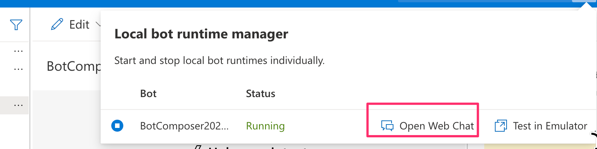
Type your messageに何か入力すると、さきほど変更した返答を確認できます。確認できたら、右上の「×」で閉じます。
つぎに Azure リソースの作成を行います。
publishing profileの作成
下記の順にクリックし、作成していきましょう。
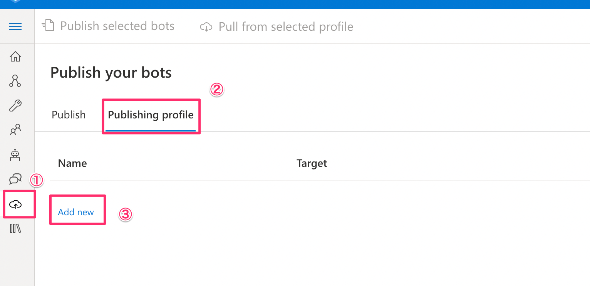
下記のように設定し、Nextを押しましょう。
Name
BotComposer202204Publishing target
Publish bot to AzureCreate new resource にチェックを入れて、Nextを押しましょう。
下記のように設定し、Nextを押しましょう。
Resource group
Create newBotComposer202204Name
botcom202204-xxxRegion
Japan EastLUIS region
West US画面下の方にある、使用しないオプションを外します。Nextを押しましょう。
Createを押しましょう。
publish bot
リソースが作成されたら、Azureへ展開します。

価格プランの変更
Azureポータルサイト(https://portal.azure.com/#blade/HubsExtension/BrowseResourceGroups)へ移動し、作成したリソースグループのApp Serviceプランを選択します。プランを無料プランに変更しましょう。
価格レベルを「F1」に変更し、適用をクリックしましょう。

次に下記のLUISの価格レベルを無料に変更します。
価格レベルを選んで「F0」に変更し、適用をクリックしましょう。
次に下記のQnA Makerの価格レベルを無料に変更します。
価格レベルを選んで「F0」に変更し、適用をクリックしましょう。
こちらも無料プランに変更します。
App Serviceプランをクリックしましょう。
価格レベルを「F1」に変更し、適用をクリックしましょう。
次に作成したリソースグループのAzure ボットを選択します。
Webチャットのテスト
Webチャットのテストで確認します。
何も出てこない場合は、やり直すをクリックか、少し時間を置くか、もう一度Azureへ展開をしてみてください。
LINEと接続
チャンネルに移動し、「LINE」をクリックします。
Messaging API チャネルでメモしたチャンネルシークレットとチャンネルアクセストークンを入力します。
適用をクリックし、WebhookのURLをコピーします。
LINE Developersのコンソール画面に戻って、「Messaging API設定」タブのWebhook URLに上記で取得したURLを設定し、Webhookの利用をオンにします。これでLINEのBotを動かす準備は全て整いました！

さらに、LINE Official Manager で応答オフ
動作確認
さっそく動かしてみましょう。トーク画面からBotに対してメッセージを送るとメッセージが送られてきたと思います！
挨拶ダイアログを作成します。
ダイアログの公式ドキュメントは下記。
https://docs.microsoft.com/ja-jp/composer/concept-dialog?tabs=v2x
①からクリックして、「＋Add a dialog」を選択します。
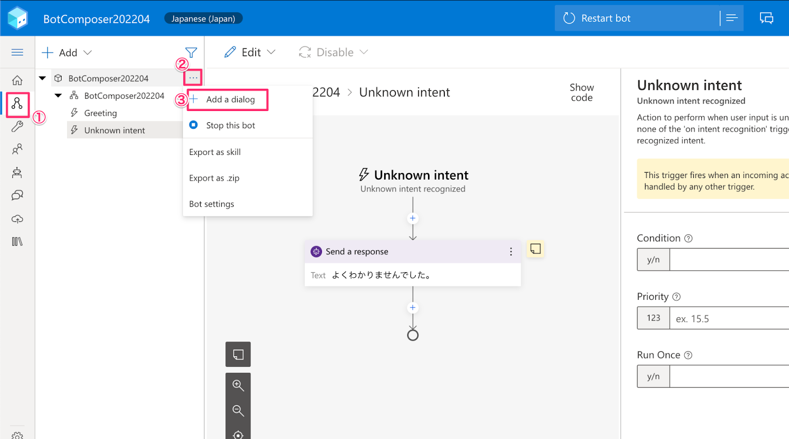
ダイアログのNameに下記を入力し、OKを押しましょう。
GetHello①に移動し、「Send a response」を追加します。
Responsesに下記を入力します。
オウム返し「${turn.activity.text}」ユーザーと同じ挨拶を返します。
次に挨拶ダイアログを呼び出すトリガーを作成します。
トリガーの公式ドキュメントは下記。
https://docs.microsoft.com/ja-jp/composer/concept-events-and-triggers?tabs=v2x
自然言語処理機能（LUIS）を使って、ユーザーの意図を取得します。
①をクリックし、「＋Add new trigger」を選択します。
What is the type of this trigger? に下記を入力します。
Intent recognizedWhat is the name of this trigger? に下記を入力します。
HelloTrigger phrasesに下記を入力し、Submitをクリックします。
- おはよう
- おはようございます
- こんにちは
- こんばんは
- さようなら順番通りにクリックし、「Begin a new dialog」を作成します。
ここで「GetHello」を選択し、挨拶ダイアログを呼び出します。
エラーを修正します。
LUISの設定をします。
Set up Language Understandingをクリックし、セットアップをします。
Use existing resources を選択し、Nextをクリックします。
Azureへサインインします。
使用するサブスクリプションを選択します。
Azure展開で作成したLUISを下記のように設定し、Nextを押します。
Language Understanding resource name
botcom202204-xxx-luis-authoring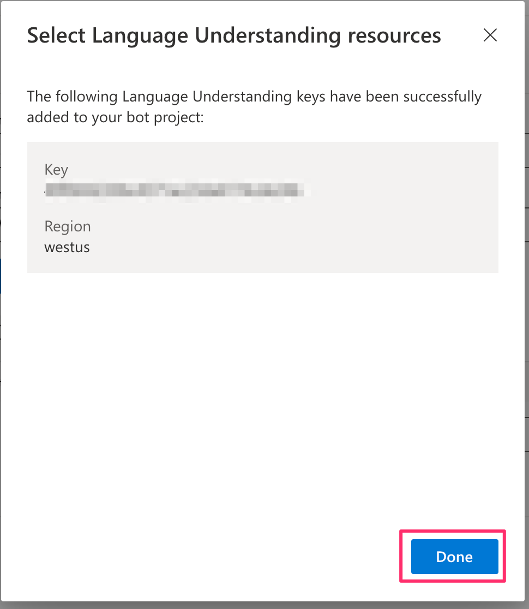
テスト
作ったものを確認しましょう。「Restart bot」を押します。
「Open Web Chat」を押しましょう。
前回の会話テストが残っていると思うので、「Restart Conversation...」をクリックします。
Type your messageに作成したtriggerでTrigger phrasesに設定したどれか、または近いものを入力すると、挨拶を確認できます。確認できたら、右上の「×」で閉じます。
Azureへ展開
動作確認
さっそく動かしてみましょう。Webチャットのテスト、LINEトーク画面からBotに対してメッセージを送るとメッセージが送られてきたと思います！


knowledge Basesの設定
まず、knowledge basesを作成します。
名前を入力し、「Next」ボタンをクリックします。
Source URLに下記URLを入力し、「Next」をクリックします。
https://mochan-tk.github.io/azure-bot-framework-composer-QnA/knowledge basesが作成できました。
エラーを修正します。
QnA Makerの設定
QnA Maker Subscription keyを設定します。
Set up QnA Makerをクリックし、セットアップをします。
Use existing resourcesを選択し、Nextを押しましょう。
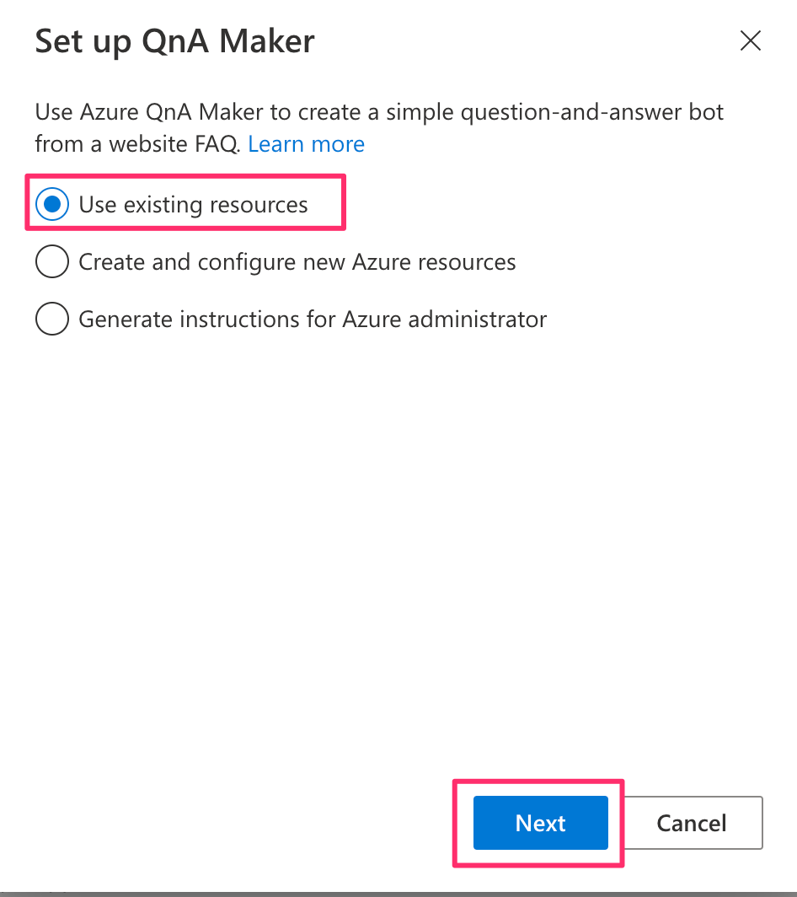
Azureへサインインします。
使用するサブスクリプション、先ほど作成したQnA Makerを選択します。
エラーも消え、キーが設定されます。
ダイアログの作成
つぎに、挨拶Botと同じようにダイアログを作成していきます。

ダイアログのNameに下記を入力し、OKを押しましょう。
GetOrder①に移動し、「Ask a question -> Number」を追加しましょう。
Responsesに下記を入力します。
コーヒーをいくつ注文しますか？User inputに移動し、Propertyに下記を入力します。
dialog.ordernumdialog.orderhotice
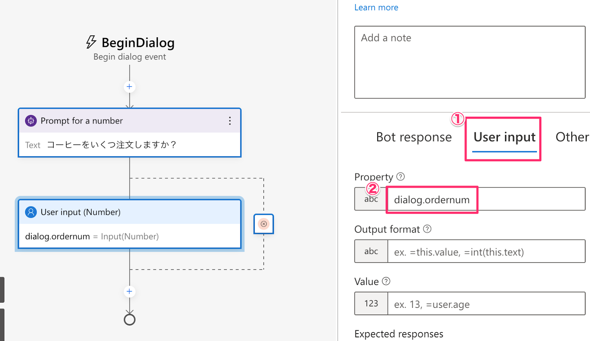
0が入力された際のチェックと返すメッセージを設定します。
Otherに移動し、Validation RulesはWrite an expressionを選択します。
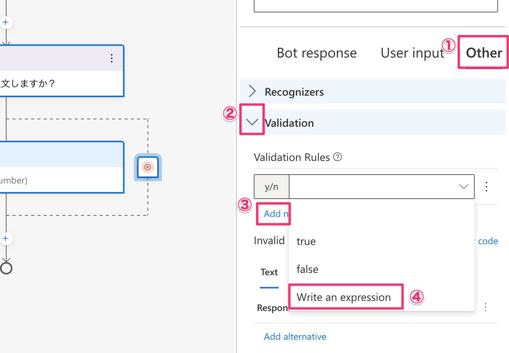
下記を入力します。
Validation Rules
this.value >= 1Responses
0以外を入力してください。注文した数によって、在庫なしということを応答します。
「Create a condition -> Branch: if/else」を追加しましょう。
Write an expressionを選択しましょう。
Conditionに下記を入力します。
dialog.ordernum < 3False側にSend a responseを追加し、下記を入力します。
申し訳ありませんが、在庫がありません。True側に「Ask a question -> Multi-choice」を追加します。
ユーザーに選択肢から回答してもらえます。
Bot responseに下記を入力しましょう。
ホットかアイスのどちらにしますか？User inputに移動し、Propertyに下記を入力します。
Array of choicesでAdd newをクリックし、下記を入力します。
ホット
アイスSend a responseを追加し、下記を入力します。
${dialog.orderhotice}コーヒを${dialog.ordernum}つですね。ご注文ありがとうございました。
次にコーヒーオーダーダイアログを呼び出すトリガーを作成します。
①をクリックし、「＋Add new trigger」を選択します。
What is the type of this trigger? に下記を入力します。
Intent recognizedWhat is the name of this trigger? に下記を入力します。
OrderTrigger phrasesに下記を入力し、Submitをクリックします。
- コーヒーください
- コーヒーにします
- コーヒーです
- コーヒーが飲みたい
- コーヒーをお願いします順番通りにクリックし、「Begin a new dialog」を作成します。
ここで「GetOrder」を選択し、コーヒーオーダーダイアログを呼び出します。
テスト
作ったものを確認しましょう。「Restart bot」を押します。
再度、Azureへ展開します。

LINE Official Account Manager 画面でリッチメニューの設定
LINE公式アカウントの管理画面にアクセスし、リッチメニューを作成していきます。まずは「表示設定」の項目を入力し、その後テンプレートの選択を行います。（ここでは４つのフレームに別れたテンプレートを選択します。）

次にリッチメニューに使用する画像を作成します。「画像を作成」ボタンから、４つのフレームに対してそれぞれテキストを入力し、最後に右上の適用ボタンを押してください。
場所 | 入力するテキスト |
左上 | camera |
右上 | 位置情報 |
左下 | Flex |
右下 | Quick Reply |
次にアクションの項目を下記の情報を参考に埋めていきます。最後に保存ボタンを押すのをお忘れなく。
番号 | タイプ | 入力欄 | ラベル |
A | リンク | https://line.me/R/nv/camera/ | camera |
B | リンク | https://line.me/R/nv/location/ | location |
C | テキスト | flex | なし |
D | テキスト | quick | なし |
LINE公式アカウント(LINE Bot)上は下記のようになります。

（参考）Messaging APIでのリッチメニューを作成
リッチメニューはMessaging APIでも作成でき、さらに柔軟な対応が可能です。今回のハンズオンでは対象外としますが、下記に参考情報を記載いたします。
URLスキームを使うとカメラや位置情報などが起動できたりします、いくつか用意されていますので試していきましょう。
カメラの起動
リッチメニュー左上の「camera」をタップしてください。カメラが起動します。

位置情報の起動
リッチメニュー右上の「位置情報」をタップしてください。位置情報が起動します。

LINEでは様々なメッセージ形式を扱うことができます。
画像メッセージを扱う
まず、画像メッセージを送信するダイアログを作成します。
Nameに 下記を入力しOKを押しましょう。
GetImageBeginDialogからSend a reaponseを追加します。

Show codeをクリックします。

下記コードを貼り付けます。（下記ではImageという関数を呼び出して実行しています。このImage関数はこの後自分で作成していきます。）
[Activity
Text='image',
ChannelData=${Image(first(turn.activity.attachments).contentUrl)}
]Image関数を追加するために、メニューより「Bot Responses」を選択し、
GetImageに下記コードを追加します。
# Image (originalContentUrl)
- ${json(concat('{"type": "image", "originalContentUrl":"',originalContentUrl,'", "previewImageUrl": "',originalContentUrl,'"}'))}ユーザーの意図がHelloに入る条件を設定します。
下記をConditionに入力しましょう。
=#Hello.Score >= 0.8 && turn.activity.channelData.message.type == 'text'ユーザーの意図がOrderに入る条件を設定します。
下記をConditionに入力しましょう。
=#Order.Score >= 0.8 && turn.activity.channelData.message.type == 'text'画像を呼び出すトリガーはUnknown intentで作成します。
手順通りにクリックし、Branch: Switch(multiple options)を追加します。
Conditionに下記を入力します。
turn.activity.channelData.typeCasesに下記を入力します。
message
postbackmessage配下にBranch: Switch(multiple options)を追加します。

Conditionに下記を入力します。
turn.activity.channelData.message.typeCasesに下記を入力します。
image
location
audio
textimage配下にBegin a new dialogを追加します。
ここで「GetImage」を選択します。

Azureへの展開もお忘れなく。
カメラを起動して写真を撮るか既に撮った写真を選択するかで、画像をトーク画面に投稿すると送った画像をそのまま返すことができます。

位置情報メッセージを扱う
画像メッセージと同じ手順で作成します。
位置情報メッセージを送信するダイアログを作成します。
Nameに下記を入力します。
GetLocationBeginDialogから追加した「Send a reaponse」に下記を入力します。
（下記ではLocationという関数を呼び出して実行しています。このLocation関数はこの後自分で作成していきます。）
[Activity
Text='location',
ChannelData=${Location(turn.activity.channelData.message.address,turn.activity.channelData.message.latitude,turn.activity.channelData.message.longitude)}
]Location関数を追加するために、メニューより「Bot Responses」を選択し、下記コードを追加します。
# Location (address, latitude, longitude)
- ${json(concat('{"type": "location", "title": "my location", "address": "',address,'","latitude": ',latitude,', "longitude": ',longitude,'}'))}＜すでに作成している場合は◆◆◆マークから＞
ユーザーの意図がHelloに入る条件を設定します。
下記をConditionに入力しましょう。
=#Hello.Score >= 0.8 && turn.activity.channelData.message.type == 'text'ユーザーの意図がOrderに入る条件を設定します。
下記をConditionに入力しましょう。
=#Order.Score >= 0.8 && turn.activity.channelData.message.type == 'text'Unknown intentに移動します。
位置情報を呼び出すトリガーはUnknown intentで作成します。
手順通りにクリックし、Branch: Switch(multiple options)を追加します。
Conditionに下記を入力します。
turn.activity.channelData.typeCasesに下記を入力します。
message
postbackmessage配下にBranch: Switch(multiple options)を追加します。
Conditionに下記を入力します。
turn.activity.channelData.message.typeCasesに下記を入力します。
image
location
audio
text◆◆◆ここから
location配下にBegin a new dialogを追加します。
「GetLocation」を選択します。
Azureへの展開もお忘れなく。
位置情報をトーク画面に投稿すると、同じ位置情報メッセージを返すことができます。

音声メッセージを扱う
画像メッセージと同じ手順で作成します。
音声メッセージを送信するダイアログを作成します。
Nameに下記を入力します。
GetAudioBeginDialogから追加した「Send a reaponse」に下記を入力します。
下記コードを貼り付けます。（下記ではAudioという関数を呼び出して実行しています。このAudio関数はこの後自分で作成していきます。）
[Activity
Text='audio',
ChannelData=${Audio(first(turn.activity.attachments).contentUrl)}
]Audio関数を追加するために、メニューより「Bot Responses」を選択し、下記コードを追加します。
# Audio (originalContentUrl)
- ${json(concat('{"type": "audio", "originalContentUrl": "',originalContentUrl,'","duration": "60000"}'))}＜すでに作成している場合は◆◆◆マークから＞
ユーザーの意図がHelloに入る条件を設定します。
下記をConditionに入力しましょう。
=#Hello.Score >= 0.8 && turn.activity.channelData.message.type == 'text'ユーザーの意図がOrderに入る条件を設定します。
下記をConditionに入力しましょう。
=#Order.Score >= 0.8 && turn.activity.channelData.message.type == 'text'Unknown intentに移動します。
音声を呼び出すトリガーはUnknown intentで作成します。
手順通りにクリックし、Branch: Switch(multiple options)を追加します。
Conditionに下記を入力します。
turn.activity.channelData.typeCasesに下記を入力します。
message
postbackmessage配下にBranch: Switch(multiple options)を追加します。
Conditionに下記を入力します。
turn.activity.channelData.message.typeCasesに下記を入力します。
image
location
audio
text◆◆◆ここから
audio配下にBegin a new dialogを追加します。
「GetAudio」を選択します。
Azureへの展開もお忘れなく。
マイクから音声を投稿すると音声メッセージを返すことができます。

Flex Messageを扱う
画像メッセージと同じ手順で作成します。
Flex Messageを送信するダイアログを作成します。
Nameに下記を入力します。
GetFlexBeginDialogから追加した「Send a reaponse」に下記を入力します。
下記コードを貼り付けます。（下記ではFlexという関数を呼び出して実行しています。このFlex関数はこの後自分で作成していきます。）
[Activity
Text='flex',
ChannelData=${Flex()}
]Flex関数を追加するために、メニューより「Bot Responses」を選択し、下記コードを追加します。
https://gist.github.com/mochan-tk/c4a405ee9f0b73dc971afa2da7e15c69＜すでに作成している場合は◆◆◆マークから＞
ユーザーの意図がHelloに入る条件を設定します。
下記をConditionに入力しましょう。
=#Hello.Score >= 0.8 && turn.activity.channelData.message.type == 'text'ユーザーの意図がOrderに入る条件を設定します。
下記をConditionに入力しましょう。
=#Order.Score >= 0.8 && turn.activity.channelData.message.type == 'text'Unknown intentに移動します。
Flexを呼び出すトリガーはUnknown intentで作成します。
手順通りにクリックし、Branch: Switch(multiple options)を追加します。
Conditionに下記を入力します。
turn.activity.channelData.typeCasesに下記を入力します。
message
postbackmessage配下にBranch: Switch(multiple options)を追加します。
Conditionに下記を入力します。
turn.activity.channelData.message.typeCasesに下記を入力します。
image
location
audio
text◆◆◆ここから
text配下にBranch: Switch(multiple options)を追加します。

Conditionに下記を入力します。
turn.activity.channelData.message.textCasesに下記を入力します。
flex
quickflex配下にBegin a new dialogを追加し、「GetFlex」を選択します。
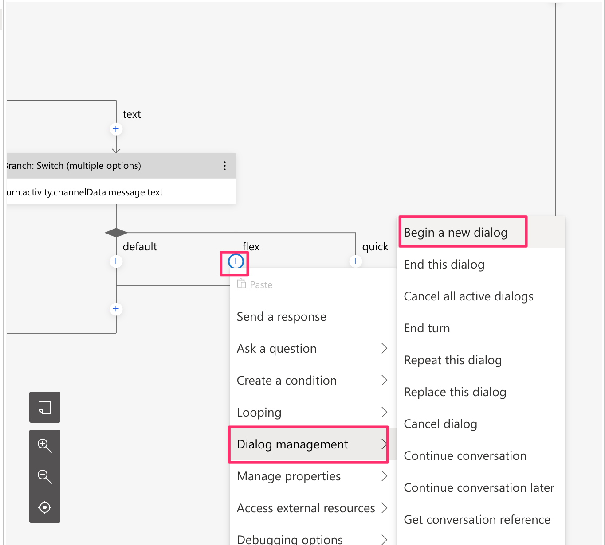

Azureへの展開もお忘れなく。
リッチメニューの左下をタップして、「flex」というテキストメッセージを投稿します。するとちょっとリッチなUIを返すことができます。これがFlex Messageです。Flex Message Simulator が用意されており、レイアウトを簡単にカスタマイズすることができます。（詳細はコチラを参照ください。）

Quick Replyを扱う
画像メッセージと同じ手順で作成します。
Quick Replyを送信するダイアログを作成します。
Nameに下記を入力します。
GetQuickReplyBeginDialogから追加した「Send a reaponse」に下記を入力します。
下記コードを貼り付けます。（下記ではQuickReplyという関数を呼び出して実行しています。このQuickReply関数はこの後自分で作成していきます。）
[Activity
Text='quickReply',
ChannelData=${QuickReply()}
]QuickReply関数を追加するために、メニューより「Bot Responses」を選択し、下記コードを追加します。
# QuickReply
- ${json(QuickReplySrc())}
# QuickReplySrc
- ```{
"type": "text",
"text": "ステッカー欲しいですか❓YesかNoで答えてください, もしくは素敵な写真送って❗️",
"quickReply": {
"items": [
{
"type": "action",
"action": {
"type":"postback",
"label":"Yes",
"data": "sticker",
"displayText":"ステッカーください❗️"
}
},
{
"type": "action",
"action": {
"type":"message",
"label":"No",
"text":"不要。"
}
},
{
"type": "action",
"action": {
"type": "camera",
"label": "camera"
}
}
]
}
}```＜すでに作成している場合は◆◆◆マークから＞
ユーザーの意図がHelloに入る条件を設定します。
下記をConditionに入力しましょう。
=#Hello.Score >= 0.8 && turn.activity.channelData.message.type == 'text'ユーザーの意図がOrderに入る条件を設定します。
下記をConditionに入力しましょう。
=#Order.Score >= 0.8 && turn.activity.channelData.message.type == 'text'Unknown intentに移動します。
Quick Replyを呼び出すトリガーはUnknown intentで作成します。
手順通りにクリックし、Branch: Switch(multiple options)を追加します。
Conditionに下記を入力します。
turn.activity.channelData.typeCasesに下記を入力します。
message
postbackmessage配下にBranch: Switch(multiple options)を追加します。
Conditionに下記を入力します。
turn.activity.channelData.message.typeCasesに下記を入力します。
image
location
audio
text◆◆◆ここから
text配下にBranch: Switch(multiple options)を追加します。
Conditionに下記を入力します。
turn.activity.channelData.message.textCasesに下記を入力します。
flex
quickquick配下にBegin a new dialogを追加し、「GetQuickReply」を選択します。
Azureへの展開もお忘れなく。
リッチメニューの右下をタップして、「quick」というテキストメッセージを投稿します。クイックリプライを使うとユーザは簡単に返信を行うことができます。

Stickerを扱う
画像メッセージと同じ手順で作成します。
Stickerを送信するダイアログを作成します。
Nameに下記を入力します。
GetStickerBeginDialogから追加した「Send a reaponse」に下記を入力します。
下記コードを貼り付けます。（下記ではStickerという関数を呼び出して実行しています。このSticker関数はこの後自分で作成していきます。）
[Activity
Text='sticker',
ChannelData=${Sticker(11537,52002735)}
]Sticker関数を追加するために、メニューより「Bot Responses」を選択し、下記コードを追加します。
# Sticker (packageId, stickerId)
- ${json(concat('{"type": "sticker", "packageId": ',packageId,', "stickerId": ',stickerId,'}'))}＜すでに作成している場合は◆◆◆マークから＞
ユーザーの意図がHelloに入る条件を設定します。
下記をConditionに入力しましょう。
=#Hello.Score >= 0.8 && turn.activity.channelData.message.type == 'text'ユーザーの意図がOrderに入る条件を設定します。
下記をConditionに入力しましょう。
=#Order.Score >= 0.8 && turn.activity.channelData.message.type == 'text'Unknown intentに移動します。
Stickerを呼び出すトリガーはUnknown intentで作成します。
手順通りにクリックし、Branch: Switch(multiple options)を追加します。
Conditionに下記を入力します。
turn.activity.channelData.typeCasesに下記を入力します。
message
postback◆◆◆ここから
postback配下にBranch: if/elseを追加します。
Conditionに下記を入力します。
turn.activity.channelData.postback.data == 'sticker'True側にBegin a new dialogを追加し、「GetSticker」を選択します。
Azureへの展開もお忘れなく。
先ほどのクイックリプライで「Yes」をタップすると、スタンプを送信することができます。
Stickerを送った場合の処理は下記になります。
message配下にBranch: Switch(multiple options)を追加します。
Conditionに下記を入力します。
turn.activity.channelData.message.typeCasesに下記を入力します。
image
location
audio
text
sticker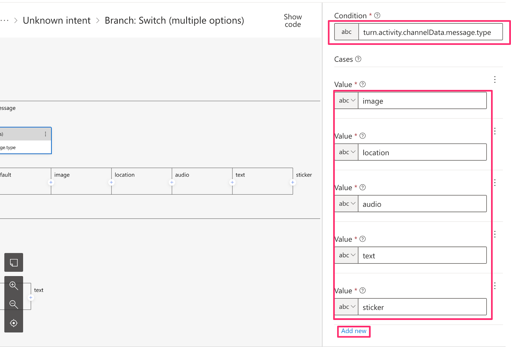
sticker配下にBegin a new dialogを追加します。
ここで「GetSticker」を選択します。
Azureへの展開もお忘れなく。
スタンプを投稿すると、先ほどのクイックリプライで「Yes」をタップしたものと同じスタンプを送信することができます。
送信したものと同じスタンプを送信する場合は下記を修正します。
BeginDialogから追加した「Send a reaponse」に下記を入力します。
[Activity
Text='sticker',
ChannelData=${Sticker(turn.activity.channelData.message.packageId,turn.activity.channelData.message.stickerId)}
]
Bot Framework Comporserは下記の手順で削除できます。
課金が気になる方は、Azureポータルサイト(https://portal.azure.com/#blade/HubsExtension/BrowseResourceGroups)へ移動し、リソースグループごと削除してください。